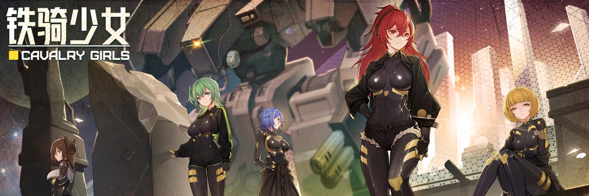

01. 项目概述

铁骑少女 是款披着
在机缘巧合之下, XJ 接触到了这款游戏, 从最初的不屑到事后的沉迷(逍遥津战神附体: 没有敌人能够越过我大炮的范围! 因年轻而犯下的错: 敢教夏亚和阿姆罗什么叫王牌机师!), 足见它确实具有独到之处, 一开始这个项目源于 XJ 想整理一份武器列表, 但出于对游戏的喜爱和支持, 最终决定实现更多的功能, 将数据整合成百科网站, 方便其他玩家查询信息, 并传递游戏能给大家带来的那份欢乐:(＾_＾)
————
本站内容基于游戏
一群: 636404554
二群: 153927029
特殊: 486296202(主要讨论模组技术问题)
外语区在线 Discord: https://discord.com/invite/4kzUDG2rTZ
官方建议文档的地址: https://docs.qq.com/sheet/DUE1RaVJQZ0lsZWZn?tab=BB08J2/
02. 网站导航
游戏数据:
武器相关)
武器列表 ┊
武器配件 ┊
武器融合 ┊
机体相关)
机体详情 ┊
主体强化 ┊
足部强化 ┊
机身挂件 ┊
机体改造 ┊
投掷物品 ┊
角色相关)
主角小队 ┊
思潮影响 ┊
忠诚好感 ┊
饰品装备 ┊
战场技能 ┊
军衔等级 ┊
敌军内容)
敌军情报 ┊
编队建制 ┊
剧情模式 ┊
特殊遭遇 ┊
外勤任务 ┊
假日安排 ┊
管理内容)
城防设施 ┊
战略支援 ┊
家具清单 ┊
回收废料 ┊
费用计算 ┊
基地部门 ┊
其他内容)
商品权重 ┊
成就系统 ┊
奖惩机制 ┊
台词对白 ┊
术语提示 ┊
问题合集 ┊
————
衍生内容:
网站更新 ┊
艺术作品 ┊
创意工坊 ┊
相关地址:
游戏更新 ┊
蒸汽社区 ┊
哔哩哔哩 ┊
百度贴吧 ┊
百科反馈 ┊
百科下载 ┊
03. 备注信息
01. 当前网站源码地址: https://github.com/xjwiki/cavalryGirls
02. 游戏图像和音乐版权, 均属于游戏开发团队既中子星游戏研究所
03. 本站使用 创意共享 4.0 协议, 既署名权/非商业使用/相同方式共享, 若无法遵循, 请勿进行转载
04. XJ 只是个普通玩家, 跟游戏开发团队没关系, XJ 也不代表游戏开发团队, 做这项目只是出自热爱
05. 如果你对网站有什么看法, 或是发现了网站的 BUG, 可到 GitHub 提 Issue, 或是在 Q 群反馈(不过 Q 群 XJ 未必能看到你的信息)
06. 感谢铁骑少女的游戏开发团队, 给我们带来了这个出乎意料的二次元硬核游戏, 独立团队开发游戏并不容易, 希望他们能够走得更远
————

 微信赞赏码
XJ 热衷于为他喜爱的游戏编写攻略百科, 这是他探索世界和分享欢乐的方式, 但想做好此事却并不简单, 为此他耗费了大量的时间与精力, 所以, 如果您觉得本站做得不错, 也许可以考虑请他喝杯咖啡, 或是来顿疯狂星期四(KFC), 这对他来讲都是极大的鼓励, 仅需微信扫码即可对他实现物理投喂, 若您不用微信, 也可通过 ko-fi.com 支持他(适用 PayPal 且无需注册)
微信赞赏码
XJ 热衷于为他喜爱的游戏编写攻略百科, 这是他探索世界和分享欢乐的方式, 但想做好此事却并不简单, 为此他耗费了大量的时间与精力, 所以, 如果您觉得本站做得不错, 也许可以考虑请他喝杯咖啡, 或是来顿疯狂星期四(KFC), 这对他来讲都是极大的鼓励, 仅需微信扫码即可对他实现物理投喂, 若您不用微信, 也可通过 ko-fi.com 支持他(适用 PayPal 且无需注册)
04. 参考引用
腾讯文档 > 游戏官方 : 铁骑少女mod制作索引中心
百度贴吧 > 路边的酱油仔 : 一些好用的武器推荐
BiliBili > 一首FTL送给在座各位 : 《铁骑少女》心得
Steam > Onecu_cu : 好感机制详解[含数值]
Steam > Tangible : Beginner's Guide to Cavalry Girls
————
BiliBili > 吴鸽有理解 : 麻雀虽小, 还真挺好玩的!《铁骑少女》Steam 游戏测评!
BiliBili > 独立游戏蜥蜴君 : 终于等到你! 因涩涩卡审核跳票三个月的铁骑少女!【铁骑少女测评】
BiliBili > 木瓜椰奶冻丶 : 成分极其复杂! 这是我见过最变态的美少女机甲肉鸽游戏! 《铁骑少女》到底好不好玩?
Licence: CC BY-NC-SA 4.0 DEED
Copyright © 2024- XJ.Chen | V0.2.0